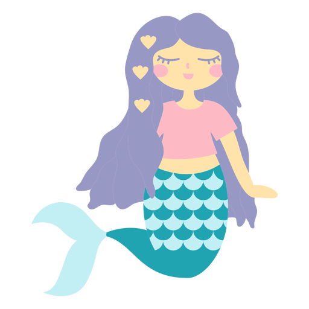
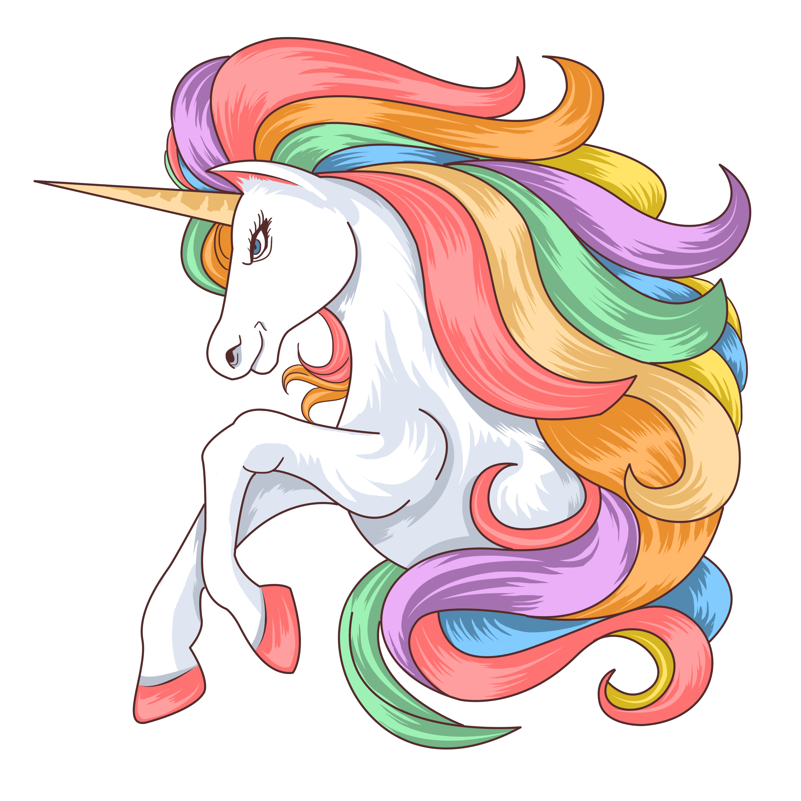
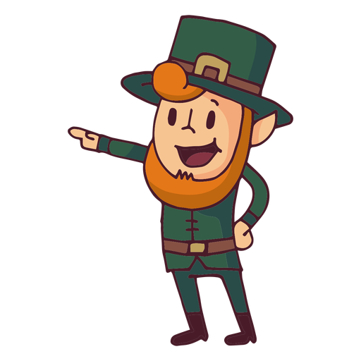
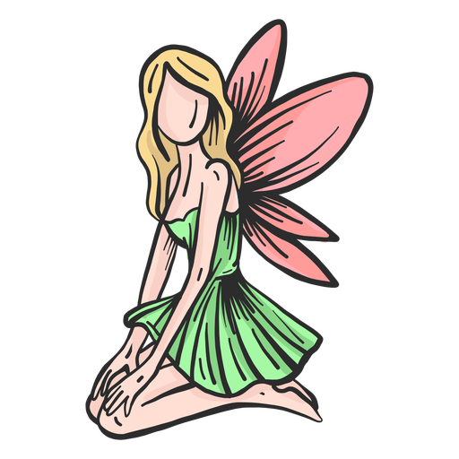

SIRENAS
Hermosas mujeres con cola de pez en lugar de piernas que moran en las profundidades del oceano poseedoras de una irresistible voz melodiosa con la que atraen a los marineros locamente
UNICORNIOS
Caballos blancos con patas de antílope, ojos y pelo de cabra y un cuerno en la frente, estas criaturas habítan en los bosques.
DUENDES
Criatura con figura de viejo, cuerpo de niño que habita en algunas casas y causa en ellas trastorno y estruendo
HADAS
Criatura humanoide, con hermosas y brillantes alas, son espiritus mágicos y su función es proteger la naturaleza